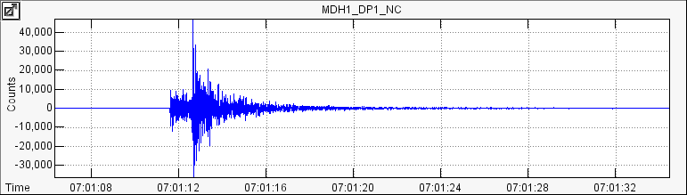
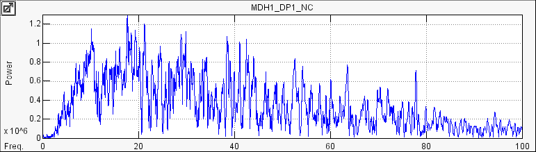

Wave Views are one of the two fundamental data views in Swarm. Any time you see a wave view in Swarm there are settings associated with that individual view. Even if you've copied a wave view on to the clipboard from somewhere else, it has its own view settings. This section deals with the different wave view settings. This section does not actually discuss the environments in which the wave views occur (such as on the Wave Clipboard or a Real-time Wave Viewer) but only the different ways you can view a wave.
Here is an example of the three general types of wave views available in Swarm. For our example we will use this small (magnitude less than 2) earthquake. First, the wave time-series: 
Then, the spectrogram:
And, finally the frequency spectra: 
Of course there are several ways in which you can change how to look
at these plots. All of the options for the wave view are available through
the Wave View Settings Dialog. To open the Wave View Settings Dialog you
can usually press '?' or click on the Wave View Settings Button,
 . Here is what the Wave View Settings
Dialog looks like:
. Here is what the Wave View Settings
Dialog looks like:

These set the general display mode for the wave. You can select from Wave, Spectra, or Spectrogram as shown above. Also you can set whether or not the bias (mean value) is removed from the wave. By default, 'Remove Bias' is checked.
These options are specific to standard Wave views and only determine how y-axis scaling is done. When 'Auto-scale amplitude' is checked Swarm determines how to scale the y-axis using an algorithm described below. If it is unchecked than the values in the user-specified 'Minimum amplitude' and 'Maximum amplitude' boxes are used as the y-axis limits.
The auto-scaling algorithm is fairly simple. In the simplest case, when 'Auto-scale memory' is unchecked, the y-axis is simply set to contain the minimum and maximum values attained by the wave in the shown time interval. However, if 'Auto-scale memory' is checked (which it is by default), then this particular wave view will remember the minimum and maximum values it has attained and always choose those regardless of the amplitude of the shown wave. This makes comparing relative amplitudes a trivial visual comparison. If 'Auto-scale memory' is subsequently unchecked it will still remember its limits if it becomes turned on again. Pressing 'R' when interacting with a wave will reset the auto-scale memory.
These options are specific to the Spectra and Spectrogram wave views. The first three options, 'Auto-scale power', 'Auto-scale power memory' and 'Maximum power' behave in fundamentally the same way as the auto-scaling described in the section immediately above.
The 'Minimum frequency' and 'Maximum frequency' boxes specify the dimensions of the x-axis in spectra mode or the y-axis in spectrogram mode. There is no auto-scaling done for these axes. While Swarm will allow the maximum frequency to be set to any positive value greater than the minimum frequency, this value will adjust automatically if it is greater than the Nyquist frequency of the wave being manipulated.
The 'Log power' checkbox sets the power axis to log mode. This also works for spectrograms. The 'Log frequency' checkbox sets the frequency axis to log mode. This has no effect in spectrogram mode.
The last two options, 'FFT bin (samples)' and 'Spectrogram Overlap (%)' only affect spectrograms. 'FFT bin' defines the number of samples to be used in each FFT. Adjusting this value affects the dimensions of each 'pixel' of the spectrogram -- increasing the number of samples increases the vertical resolution while decreasing the horizontal resolution and vice versa. The default 'Auto' option picks a value that attempts to have medium resolution on each axis.
'Spectrogram Overlap' determines the amount of overlap in consecutive FFTs. Legal values are between 0 and 95. The higher this value is set the 'smoother' the FFT will look. Note, however, that artifacts can occur when excessive overlap is used.
Swarm allows you to filter waves using a Butterworth filter. The 'Enabled' checkbox turns the filter on and off.
The three types of filters available are 'Low pass', 'High pass', and 'Band pass'. The 'Low pass' filter passes over the low frequencies and filters the high frequencies. When 'Low pass' is selected only the 'Maximum hz' box will be editable -- this is the corner frequency of the low pass filter. The 'High pass' filter passes over the high frequencies and filters the low frequencies. When 'High pass' is selected only the 'Minimum hz' box will be editable -- this is the corner frequency of the high pass filter. Lastly, the 'Band pass' filter passes over a band of frequencies and filters frequencies higher and lower than the band. When 'Band pass' is selected both the 'Maximum hz' and 'Minimum hz' boxes will be editable -- these are the corners of the band pass filter.
The 'Zero phase shift' option runs the specified filter both forward and backward. This eliminates any phase shift effects due to the filter at the expense of effectively doubling the filter order.
The 'Order' slider allows you to set the order of the filter as even values between 2 and 8, inclusive. In general, the higher the order the steeper the cutoff at the corner frequencies.
Whenever you are interacting with a Wave View the following keyboard shortcuts will be active:
? - Open Wave View Settings Dialog
W or , - Toggle Wave view mode
S or . - Toggle Spectra view mode
G or / - Toggle Spectrogram view mode
F - Toggles filter on and off
L - Toggles between the four different log axes states
R - Resets auto-scaling memory